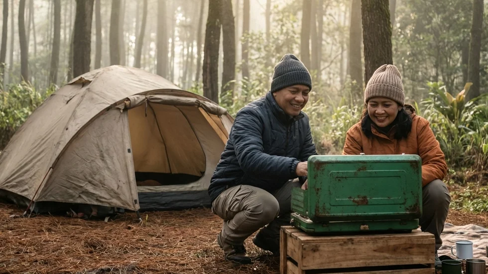

1. Mendefinisikan Ulang Liburan Mewah di Tengah Alam Terbuka
Ketika membicarakan tentang sebuah pelarian akhir pekan (staycation), kebanyakan orang urban akan langsung membayangkan sebuah kamar hotel berlapis marmer di tengah kota dengan fasilitas pendingin ruangan yang maksimal. Namun faktanya, sekadar berpindah tempat tidur dari rumah ke kamar hotel seringkali tidak cukup efektif untuk merestorasi jiwa yang sedang mengalami kelelahan ekstrem (burnout). Manusia secara alamiah membutuhkan interaksi dengan alam hijau untuk menyembuhkan saraf-saraf yang tegang. Permasalahannya, bayangan tentang wisata alam seringkali diidentikkan dengan aktivitas fisik yang menguras keringat dan penuh penderitaan.
Di sinilah kita perlu mendefinisikan ulang makna kata "mewah". Dalam konteks wisata luar ruang saat ini—khususnya ketika Anda mencari wacana mengenai Staycation Nyaman di Resort Glamping: Liburan Mewah Tanpa Hilangkan Nuansa Alam—kemewahan tidak lagi diartikan sebagai bangunan beton megah di tengah hutan. Kemewahan di alam liar adalah ketika Anda bisa menikmati keliaran hutan tropis tanpa perlu kelelahan mendirikan tenda, saat Anda bisa tertidur pulas tanpa menggigil kedinginan, dan saat Anda bisa menemukan toilet yang bersih bercahaya di tengah gelapnya malam pegunungan.
Menghapus Stigma Liburan Alam yang Menyiksa
Industri ekowisata telah bertransformasi dengan amat sangat pesat. Anda tidak perlu lagi menjadi seorang pecinta alam berlisensi survival untuk bisa menatap hamparan bintang (milky way) langsung dari pintu tenda Anda. Pengelola perkemahan modern kini memprioritaskan penyediaan sarana yang memanjakan tubuh fisik, agar pikiran Anda bisa seratus persen fokus pada proses relaksasi (healing).
Konsep Comfort Camping Sebagai Jembatan
Untuk menjembatani keinginan bermalam di alam namun dengan biaya yang tidak semahal menginap di bangunan resort glamping kelas atas, muncullah konsep jalan tengah yang brilian bernama Comfort Camping. Konsep ini menggunakan tenda kemah reguler (tenda dome), namun pelayanan, penyiapan fasilitas tidur, dan kebersihan lingkungannya disetarakan dengan standar pelayanan perhotelan (hospitality). Anda mendapatkan "kemewahan pelayanan" yang paripurna, namun dengan bentuk fisik yang tetap merakyat dan menyatu dengan alam.
BACA JUGA (Liburan Praktis):
2. Apa yang Membuat Staycation di Area Kemah Ini Terasa Nyaman?
Sebuah area Comfort Camping atau Glamping sederhana berhak menyandang gelar tempat staycation yang layak apabila mampu menjamin elemen-elemen fundamental berikut ini:
Fasilitas Tidur Setara Penginapan Modern
Tidur beralaskan tanah dengan matras karet tipis adalah masa lalu. Pada layanan staycation kemah modern ini, tenda Anda akan dialasi terlebih dahulu menggunakan lembaran pelindung penahan suhu dingin, lalu ditumpuk dengan matras spons atau kasur udara yang sangat tebal dan empuk. Setiap tamu akan mendapatkan jatah sebuah kantong tidur (sleeping bag) berbahan polar fleece yang telah dicuci bersih dan wangi. Infrastruktur tidur ini dijamin akan menahan hawa beku pegunungan dan memastikan kualitas tidur (deep sleep) Anda tercapai sempurna.
Akses Kelistrikan untuk Tetap Terhubung
Berlibur di alam bukan berarti Anda harus mematikan koneksi secara absolut (kecuali jika itu adalah pilihan Anda). Untuk menunjang kenyamanan, operator perkemahan kelas atas menarik instalasi kabel listrik PLN secara aman hingga ke setiap titik kavling tenda. Fasilitas ini sangat vital untuk mengisi daya baterai telepon seluler, menyalakan kipas portabel di kala siang, atau sekadar menghidupkan mesin penghangat botol susu bagi para ibu yang membawa bayi.
3. Menjaga Keaslian Nuansa Alam dalam Konsep Glamping Sederhana
Seringkali, bangunan resort glamping yang terlalu masif dan terbuat dari kayu tebal justru memutus interaksi langsung pengunjung dengan alam sekitarnya. Konsep kemah yang baik harus bisa menjaga batas keseimbangan tersebut.
Penggunaan Tenda Dome Spesifikasi Gunung
Dalam layanan wisata alam berbasis Comfort Camping, akomodasi yang digunakan tetap berupa tenda dome berbentuk membulat yang sangat otentik layaknya tenda para pendaki. Bedanya, tenda ini berspesifikasi tinggi (double layer). Jaring udara di bagian dalam dipisah oleh rongga dengan kain payung anti air di bagian luar, memastikan sirkulasi oksigen amat lancar namun sisa embun pagi tidak akan pernah menetes membasahi wajah Anda saat tertidur.
Berinteraksi Langsung dengan Tanah dan Pepohonan
Karena Anda menggunakan tenda kain, setiap kali Anda membuka ritsleting pintu, kaki Anda akan langsung berpijak pada rerumputan hijau yang basah oleh embun. Anda tidak dibatasi oleh teras beton atau pintu kaca yang tebal. Hembusan angin pinus dan suara serangga malam akan terdengar amat jelas merdu menembus dinding kain tenda Anda. Inilah nuansa alam sejati yang tidak boleh dihilangkan.

Menyewa fasilitas kemah yang telah diset-up dengan sempurna (Comfort Camping) memberikan Anda kemewahan layanan hotel sekaligus mempertahankan nuansa visual petualangan alam yang otentik. (Dokumentasi: Batu Sunrise Camp)4. Fasilitas Penunjang yang Menentukan Kualitas Staycation
Fasilitas penunjang di luar tenda adalah metrik (tolok ukur) paling absolut untuk membedakan antara perkemahan amatir dengan pengelola profesional.
Kebersihan Sanitasi dan Toilet Permanen
Liburan staycation Anda akan hancur berantakan jika fasilitas buang airnya kotor. Oleh karena itu, pilihlah area kemah yang berani menggaransi adanya blok toilet permanen berdinding keramik. Toilet tersebut wajib memiliki kloset duduk dengan sistem siram (flushing) yang berfungsi baik, aliran air jernih yang tak pernah mati, dan akan jauh lebih mewah lagi apabila telah diintegrasikan dengan mesin pemanas air mandi (water heater).
Area Parkir yang Ramah Kendaraan Keluarga
Kemewahan anti-repot juga berarti kendaraan roda empat Anda bisa bermanuver hingga ke dekat lokasi tenda. Konsep lahan Campervan Friendly memastikan Anda tidak perlu berjalan kaki atau mendaki tebing sambil memanggul koper pakaian yang berat. Proses bongkar muat barang dari bagasi mobil ke dalam tenda menjadi amat sangat praktis dan menghemat energi.
5. Rekomendasi Spot Staycation Nyaman di Batu Malang
Jika Anda mempertanyakan di mana lokasi yang mampu mewujudkan wacana Staycation Nyaman di Resort Glamping: Liburan Mewah Tanpa Hilangkan Nuansa Alam ini, kami merekomendasikan sebuah destinasi premium di Kota Batu.
Batu Sunrise Camp sebagai Pionir Comfort Camping
Kawasan Batu Sunrise Camp telah lama dikenal sebagai pionir yang menggabungkan keramahan alam dengan ketatnya SOP pelayanan ala perhotelan. Mereka menawarkan penyewaan paket tenda All-In, yang artinya saat rombongan Anda tiba, tenda anti-badai telah kokoh berdiri lengkap dengan seluruh infrastruktur tidur tebal di dalamnya. Anda mendapatkan colokan listrik yang tertata rapi, kebebasan akses ke toilet duduk VIP yang selalu dibersihkan, serta area api unggun (fire pit) yang aman.
Harmoni Antara Harga Ekonomis dan Pelayanan VIP
Hal yang membuat tempat ini begitu dicari adalah titik ekuilibrium antara harga sewa yang dipatok amat miring (ratusan ribu saja per keluarga) dengan value atau manfaat luar biasa yang diberikan. Lokasinya langsung menghadap hamparan lembah luas ke arah timur tanpa penghalang. Saat malam, Anda disuguhi pemandangan ribuan lampu kota (City Lights), dan saat subuh, fajar keemasan (Golden Sunrise) akan terbit langsung di depan pintu tenda Anda.
BACA JUGA (Edukasi Persiapan Kemah):
6. Aktivitas Seru Saat Staycation di Area Kemah
Waktu bersantai Anda jangan sampai dipenuhi rasa bosan. Rancanglah jadwal liburan yang mengeratkan kembali hubungan (bonding) keluarga.
Menikmati Momen Golden Sunrise Secara Privat
Bangunlah sedikit lebih awal, sekitar pukul 05.00 WIB. Seduhlah secangkir kopi hitam panas menggunakan kompor portabel di teras Anda. Duduklah dengan tenang dan resapilah detik-detik proses transisi malam menuju pagi. Menatap siluet pegunungan yang perlahan disinari oleh warna jingga dan ungu fajar adalah metode healing visual yang tak ada tandingannya.
Barbeque Sederhana di Malam Hari
Saat suhu malam mulai merosot, aktifkan kembali fungsi dapur lapangan Anda. Memanggang irisan daging, sosis ayam, atau membakar marshmallow di sekitar area api unggun adalah ritual wajib saat staycation di alam. Suasana hangat ini adalah katalisator terbaik untuk memulai percakapan tulus nan mendalam (deep talk) dengan pasangan atau anak-anak Anda.
7. Tips Persiapan Staycation Alam untuk Pemula
Sekalipun Anda telah menyewa paket all-in dengan fasilitas VIP, tubuh Anda tetap memerlukan mitigasi dasar terhadap suhu luar ruang.
Membawa Pakaian Hangat yang Tepat
Lupakan sejenak tentang outfit fesyen yang tipis. Suhu malam Kota Batu bisa amat membekukan. Terapkanlah 3-Layering System: pakailah pakaian dalam (base layer) penyerap keringat, lapis kedua berbahan fleece (polar) penahan suhu tubuh, dan bungkus dengan jaket windbreaker (parasut) tebal penahan tiupan angin tajam. Lindungi ekstremitas tubuh dengan kupluk dan kaus kaki tebal ganda.
Menyesuaikan Ekspektasi Liburan
Ingatlah bahwa Anda sedang berada di alam bebas, bukan di gedung pencakar langit. Anda mungkin masih akan bertemu dengan embun yang basah di pagi hari atau mendengar nyanyian serangga liar. Terimalah elemen-elemen alami tersebut dengan pikiran terbuka (open minded) sebagai bagian tak terpisahkan dari petualangan staycation Anda.
8. Kesimpulan
Mengambil jeda dari rotasi kehidupan yang melelahkan adalah sebuah investasi yang amat berharga bagi kesehatan mental Anda. Penelusuran mengenai gagasan Staycation Nyaman di Resort Glamping: Liburan Mewah Tanpa Hilangkan Nuansa Alam ini membuktikan bahwa kita mampu meraih dua dunia sekaligus. Memilih opsi Comfort Camping—sebuah glamping sederhana berbasis tenda dome dengan fasilitas penyewaan *all-in*—layaknya yang ditawarkan oleh Batu Sunrise Camp, memastikan Anda terbebas dari keribetan logistik, terjaga kehangatan tidurnya, dan terjamin kualitas sanitasinya. Semua kemewahan pelayanan ini didapatkan tanpa mengorbankan otentisitas interaksi fisik Anda dengan rerumputan pinus dan panorama sunrise yang magis. Siapkan ransel kecil Anda, matikan laptop Anda, dan biarkan alam Kota Batu mengambil alih tugas menyembuhkan jiwa Anda akhir pekan ini.